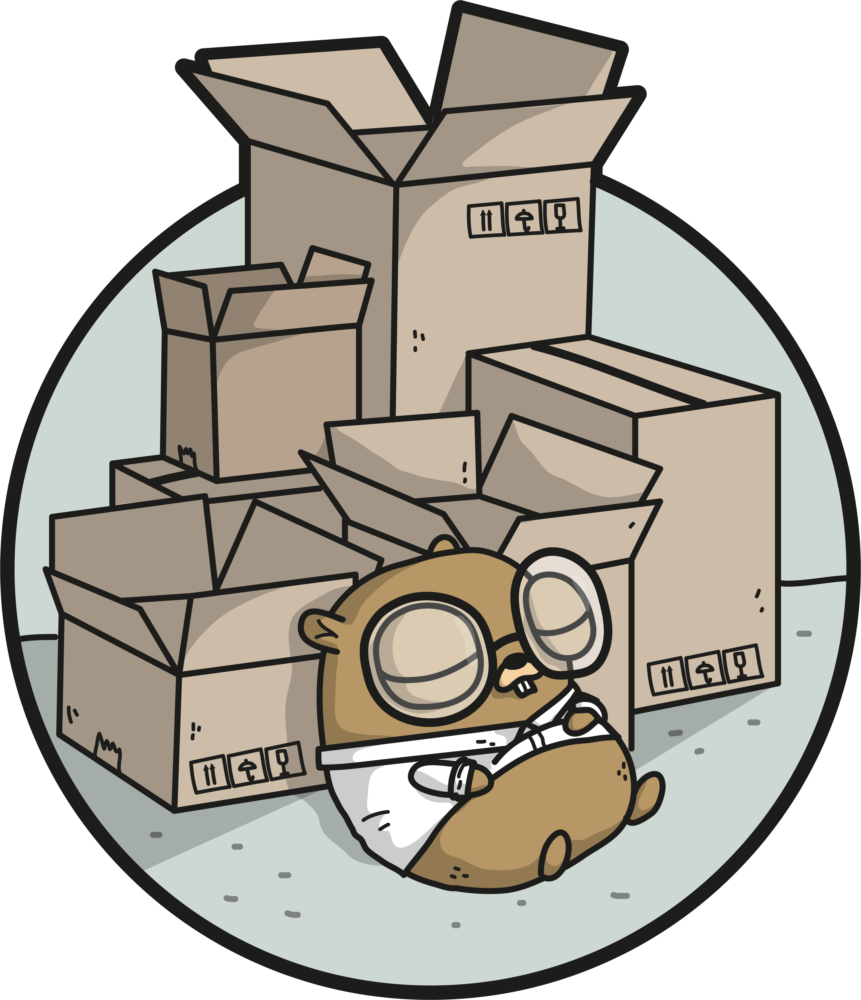

Testing Mailer in Go
Forewords
I needed a way to test mail confirmation. When you are dealing with deb authentication you would like to be sure that this email exist. And usually I use is_email_confirmed column next to user credentials in the database table. Once user hits siging endpoint as last step I send an email with confirmation token.
I was looking on few popular tools across the Internet:
What I found
My requirements were: run in docker, easy to config, basic functionality to render email. All things above quite heavy apps with complex configuration. After that I found found nice and lightweight way how to test it locally.
-> https://github.com/mailhog/MailHog

Setup
# docker-compose.dev.yml
...
mailhog:
image: mailhog/mailhog
container_name: mailhog
restart: always
ports:
- '8025:8025'
- '1025:1025'
...
I did the small package in my project and now I can use it around my services to send emails and catch them in mailhog!
About golang smtp you can checkout here
package main
import (
"bytes"
"log"
"net/smtp"
)
func main() {
// Connect to the remote SMTP server.
c, err := smtp.Dial("localhost:1025")
if err != nil {
log.Fatal(err)
}
defer c.Close()
// Set the sender and recipient.
c.Mail("sender@example.org")
c.Rcpt("recipient@example.net")
// Send the email body.
wc, err := c.Data()
if err != nil {
log.Fatal(err)
}
defer wc.Close()
buf := bytes.NewBufferString("This is the email body.")
if _, err = buf.WriteTo(wc); err != nil {
log.Fatal(err)
}
}
I would recommend setting this up via env, check my post about it.
Not sure if it will be useful to anyone, but i decided to share it.
Cover from github.com/ashleymcnamara/gophers.